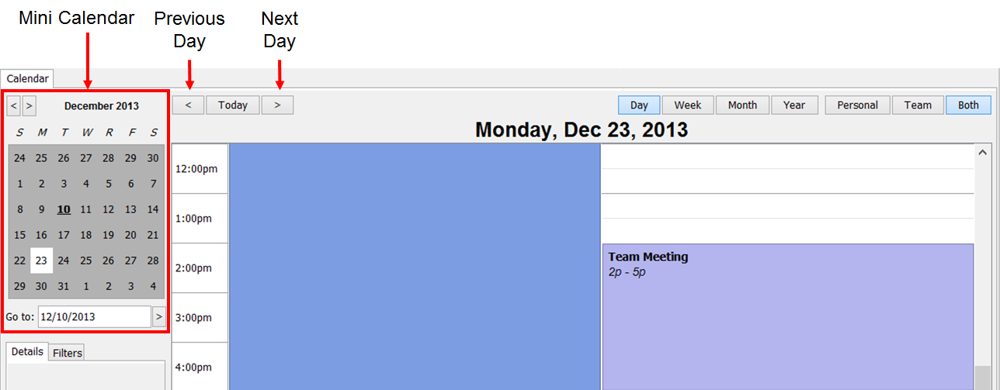

Navigating Day View
The Day view displays all events for a selected day for a 24-hour period. To apply this view, click on the Day button, located at the top right of the module.
To navigate between days, click on the Previous Arrow or Next Arrow above the calendar to to move forward or backward by one day. Alternatively, click on the desired date on the Mini Calendar in the left pane to bring it up on the view. Finally, the left and right arrow keys on the keyboard will also move backward and forward by one day.
